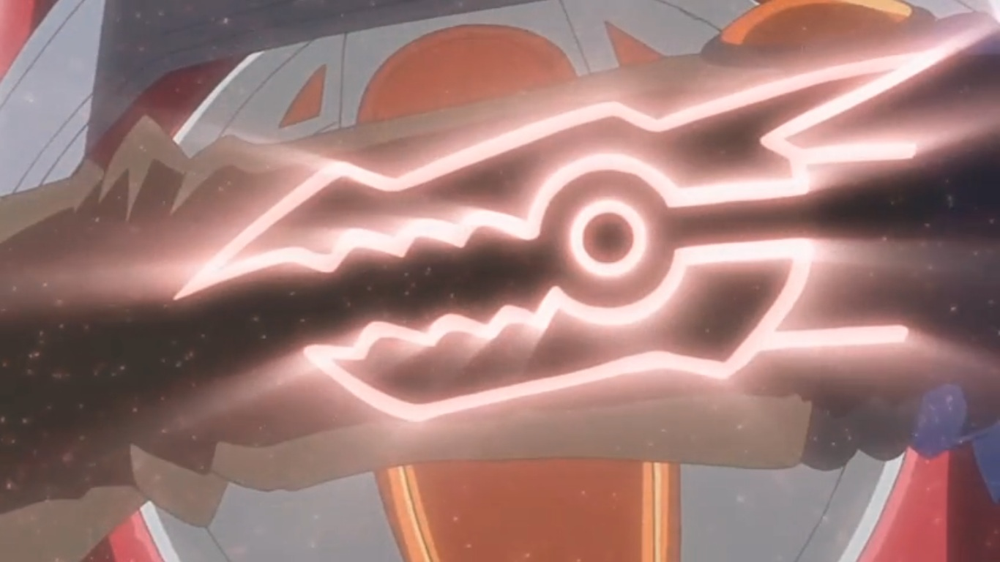
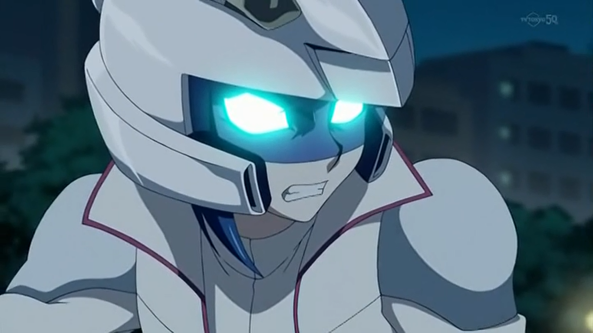

! Rin, où es-tu !? RIN !
! Rin, où es-tu !? RIN !
Yugo: Rin
! Rin, où es-tu !? RIN !
Yugo cherchait Rin partout depuis un moment maintenant, sans aucune trace d'où elle se trouvait. Il se sentait stupide. Il n'aurait JAMAIS dû la laisser seule.
Yugo préssentait que quelqu'un la suivait ces derniers temps, alors il restait sur ses gardes pour la protéger. Maintenant, la seule fois où il avait laissé Rin toute seule,
alors qu'il pensait qu'elle serait en sécurité chez eux, était évidemment le moment où il aurait dû être là pour elle.
cherchait Rin partout depuis un moment maintenant, sans aucune trace d'où elle se trouvait. Il se sentait stupide. Il n'aurait JAMAIS dû la laisser seule.
Yugo préssentait que quelqu'un la suivait ces derniers temps, alors il restait sur ses gardes pour la protéger. Maintenant, la seule fois où il avait laissé Rin toute seule,
alors qu'il pensait qu'elle serait en sécurité chez eux, était évidemment le moment où il aurait dû être là pour elle.
Yugo: Merde ! C'est de ma faute ! Je n'aurais pas dû laisser Rin toute seule ! J'aurais dû rester avec elle !
Yugo s'insultait lui-même pour sa gaffe. Plus tôt dans la soirée, il voulait rester avec Rin pour garder un œil sur elle, et loin de celui qui la suivait.
Début du Flashback
Rin: Ça ira si je reste à la maison ce soir. Je pense vraiment que je serais en sécurité ici pendant que tu iras nous chercher à manger.
Rin conseilla à son ami d'enfance. Bien évidemment, Yugo protesta.
Yugo: Pas question ! Je ne vais pas te laisser toute seule Rin, pas même une seconde ! Et si celui qui te suit sait où nous vivons ? J'ai besoin d'être ici pour
lui botter le cul s'il essaie de te faire du mal !
Rin essaya de rassurer Yugo que tout irait bien pour elle.
Rin: Tout ira bien, Yugo. Après ton départ, je verrouillerais la porte et sécuriserais toutes les fenêtres. Et si quelqu'un frappe et que ce n'est pas une de nos connaissances,
je ne le laisserai certainement pas entrer. Fais-moi confiance, je serai en sécurité ici.
Yugo n'avait pas l'air convaincu, croisait les bras.
Yugo: Je ne suis toujours pas d'accord. Que faire si quelque chose t'arrive et que je ne suis pas là pour t'aider ? Je ne pourrais jamais me le pardonner.
Yugo insistait, ce dernier était vraiment inquiet. Rin sourit, en serrant son ami dans ses bras.
Rin: J'apprécie vraiment que tu t'inquiètes autant pour moi et que tu veuilles me protéger. Je te promets que tout se passera bien. D'accord ?
Cette dernière offrait à Yugo un de ses sourires indiquant qu'il ne pouvait rien lui refuser.
A contrecœur, Yugo a finalement accepté de sortir pour aller chercher de la nourriture. Il pris le volant de sa D-Wheel et promis de revenir bientôt. Plus tard, quand il est rentré avec leur dîner, Yugo a su qu'il avait fait une grave erreur.
Il a immédiatement vu que leur porte avait été cassée, et en morceaux. Le pire, c'est que Rin n'était plus là. Elle n'a été vue nulle part. Yugo jura si fort qu'il pensait que tout le quartier des Commons pouvait l'entendre. Puis, sur sa D-Wheel, il a commencé à chercher son amie de toujours. Il avait peur de ne jamais la retrouver.
Fin du Flashback
Yugo: Je t'en prie, Rin... JE T'EN SUPPLIE, faites que tu ailles bien !
Yugo se disait à lui-même en continuant à chercher. Heuresement pour lui, l'ange gardien de Rin était déjà passé à l'action.
Rin était effrayée comme jamais. Elle courait aussi vite que possible pour qu'elle aie la vie sauve. Elle n'avait aucune idée de qui était ce psychopathe ou pourquoi il était après elle. Tout ce qu'elle savait, c'est qu'elle ne pouvait pas le laisser l'attraper. Alors qu'elle courait, elle s'en voulait d'avoir convaincu Yugo de partir. Il voulait rester auprès d'elle et avait toutes les raisons du monde de le faire. Sa propre stupidité l'a conduit à cette course-poursuite dans la nuit.
Après avoir tourné dans un recoin, Rin a vu à son grand désarroi qu'elle était dans une impasse. Elle se retourna, le dos contre le mur. Elle n'avait jamais eu aussi peur de toute sa vie. Son poursuivant a alors ralenti son rythme, sachant qu'il l'avait piégée.
Sous sa cape, Yuri souria.
Après le fiasco qu'il a essuyé dans la Dimension Xyz, Yuri s'était assuré que personne ne pourrait l'atteindre cette fois-ci.
Il ne voulait pas prendre de risques. Après être arrivé dans la Dimension Synchro, il a exploré les environs, en traquant silencieusement la fille aux cheveux verts
avec le bracelet, nommée Rin.
souria.
Après le fiasco qu'il a essuyé dans la Dimension Xyz, Yuri s'était assuré que personne ne pourrait l'atteindre cette fois-ci.
Il ne voulait pas prendre de risques. Après être arrivé dans la Dimension Synchro, il a exploré les environs, en traquant silencieusement la fille aux cheveux verts
avec le bracelet, nommée Rin.
Yuri n'a vu personne qui pourrait lui poser problème, à part ce type qui partageait son visage, était resté collé à Rin comme de la glu. Il se demandait pourquoi
ils se ressemblaient, comme l'autre voyou de la Dimension Xyz
qui s'était échappé avec Ruri
de la Dimension Xyz
qui s'était échappé avec Ruri .
Honnêtement, il s'en fichait, tant qu'il était capable de mener à bien sa mission.
.
Honnêtement, il s'en fichait, tant qu'il était capable de mener à bien sa mission.
Ce nouveau type ne quittait presque jamais Rin. Il n'était pas pressé, alors il attendait le bon moment pour bondir. L'occasion s'est finalement présentée lorsque ce type s'est aventuré dans son véhicule tape à l'oeil, laissant la jeune fille seule. Cela a conduit à la poursuite qui a eu lieu ce soir... une poursuite qui a maintenant pris fin.
Rin avait envie de crier, d'appeler à l'aide. Elle voulait crier si fort que Yugo aurait été capable de la trouver à temps. Le problème était qu'elle ne pouvait pas. La peur s'était emparée d'elle et elle ne pouvait rien faire d'autre que de regarder l'étranger masqué se rapprocher. Rin aurait aimé avoir un disque de duel pour pouvoir se défendre. Elle détestait se sentir comme ça, sans défense et effrayée.
Yuri: La partie de cache cache est terminée. Allez, viens avec moi. Nous allons voir le Professeur.
Disait Yuri, presque assez proche pour la toucher. Rin n'avait aucune idée de qui était ce professeur, mais il devait être un vrai malade s'il envoyait
quelqu'un kidnapper des adolescentes comme elle. Elle était coincée contre le mur et n'avait aucun espoir de s'échapper.
Yuri souria triomphalement alors qu'il s'avançait pour la prendre.
Yuri: Ku, ku, ku...Gaaahhh !
C'est alors qu'il le senti : un violent coup sec sur sa nuque. Ce dernier s'essoufla bruyamment à cause de la douleur inattendue, ce qui a fait sursauter Rin aussi. Il s'est immédiatement évanoui et heurta le sol, d'un bruit lourd.
Rin était choquée par la tournure des événements. Elle fixa son futur kidnappeur, perplexe face à ce qui s'était passé.
Rin: Est-il vraiment... inconscient ?
Pensa t-elle, ayant peur de devoir le déplacer pour le découvrir ?
???: Est-ce que tu vas bien ?
Une nouvelle voix l'interrogea. Contrairement à l'homme qui l'avait poursuivie, celle-ci semblait plus âgée et beaucoup plus gentille. Lentement, les yeux écarquillés, Rin leva les yeux vers son héros inattendu. Le jeune homme devant elle était en effet plus âgé, et plus grand avec une marque de criminel sur le côté gauche de son visage. Rin a pu constater qu'il était sincère quant à son bien-être. Après un moment, elle a finalement commencé à se calmer.
Rin: Je... Je pense que oui. Merci.
Elle le disait, presque à bout de souffle. L'homme acquiesça en souriant. D'une certaine manière, Rin était sûre que cette nouvelle personne ne voulait pas lui faire de mal. Pas comme ce type, par terre, qui a failli la capturer. Elle a ensuite baissé les yeux vers lui de nouveau.
Rin: Est-ce qu'il est...?
Rin commenca sa phrase, mais le nouveau venu secoua sa tête et lui répondit.
???: Il est inconscient, et ce pour un bon moment. Tu n'as pas à t'en faire. Ne t'inquiète pas.
Rin sentait de plus en plus qu'elle pouvait faire confiance à cet homme.
Rin: Qui est tu ? Pourquoi m'avoir sauvée ?
Le jeune homme regarda Rin, et lui fit sourire réconforteur.
Yusei: Je m'appelle Fudo Yusei .
Yusei: Je m'appelle Fudo Yusei. Je suis ici pour te protéger, Rin.
Rin haleta.
Rin: T-Tu... Tu connais mon nom.
Elle demanda, surprise.
Yusei: Toi, ainsi que Yugo. Je suis venu pour vous aider tous les deux.
Répondit Yusei.
Rin était remplie de tant de questions, qu'elle ne savait pas par où commencer. Et avant qu'elle ne puisse poser sa prochaine question...
Yugo: RIN !
Rin et Yusei se sont retournés pour voir Yugo s'arrêter derrière eux et enlever son casque.
Rin cria, en courant vers lui. Lorsqu'ils se rencontrèrent, ils s'étreignirent si fort qu'aucun d'entre eux ne voulut lâcher.

Yusei sourit, heureux de voir que les deux amis d'enfance étaient à nouveau ensemble. Cela leur éviterait d'avoir à le retrouver plus tard. Car il savait qu'ils devaient partir, et vite. Mais d'abord, il devait les laisser, tranquille entre eux et se rassurer mutuellement.
Rin: Yugo ! Je vais bien ! Je suis si heureux que tu sois là ! J'avais tellement peur !
Yugo: Rin, quand je suis revenu, la porte était cassée et tu étais partie ! Je t'ai cherchée partout ! Que diable s'est-il passé !?
Demanda Yugo en rompant l'étreinte et en regardant Rin en face... , cette dernière avait un visage rempli de culpabilité.
Rin: Eh bien, après ton départ, tout était plutôt calme au début. Puis j'ai entendu quelqu'un frapper à la porte d'entrée. Qui que ce soit, il n'a rien dit, donc je savais que ça ne pouvait pas être toi. Tu annonçes toujours ton arrivé quand tu rentre. J'ai couru instantanément vers ma chambre et j'ai fermé la porte. J'ai continué à écouter pour entendre des voix, mais je n'ai entendu que des coups. Puis ce fut le silence totale... juste avant d'entendre un grand fracas ! Je savais que la porte avait été forcée, alors j'ai sauté par la fenêtre de ma chambre et j'ai couru ! Et depuis, Je n'ai pas cessé de courir !
Elle s'arretâ de parler, le temps pour elle de reprendre son souffle. Yugo, quand à lui, était de plus en plus énervé à chaque détail.
Yugo: Ce bâtard t'a poursuivi pendant tout ce temps là !?
Il demanda, enragé par cette ordure qui avait fait vivre un tel enfer à Rin ce soir. Rin hocha la tête. Yugo pris alors un air de remords.
Yugo: Rin, je suis tellement désolé. Si seulement j'étais resté avec toi, tu n'aurais pas eu as...
Mais Rin l'interrompit net.
Rin: Non, Yugo. C'est moi qui suis désolé. Tu avais raison. J'aurais dû t'écouter. Je n'aurais jamais imaginé que ce type aurait eu le culot de s'introduire dans notre maison. C'est de ma faute.
Yugo: Ça n'a pas d'importance, tu vas bien maintenant. Alors, que s'est-il passé ensuite ?
Yugo demanda à Rin, voulant entendre la suite de l'histoire.
Rin: Et bien, j'ai continué à courir, jusqu'à ce qu'il me coince ici. Il a dit qu'il allait m'emmener à quelqu'un appelé "Le Professeur". Ne me demande pas, je n'ai aucune idée de
qui il parlait. Quoi qu'il en soit, avant qu'il ne puisse poser la main sur moi, il a été frappé par derrière... par lui.
Rin a terminé son explication, et dévoilant enfin Yusei.
Yugo: Qui c'est ?
Yugo demanda, n'ayant jamais vu ce type auparavant.
Rin: Il s'appelle Yusei Fudo. C'est grâce à lui que j'ai eu la vie sauve. Un seul coup de sa part, et mon assaillant était dans les vapes. J'étais justement en train de le remercier quand tu es arrivé.
Rin finissait de raconter son histoire. Yugo, a regardé Yusei avec intérêt.
Yugo: Tu as vraiment sauvé Rin ?
Yugo demanda à Yusei.
Yusei: En effet.
Aussitôt répondu, Yugo a souri en s'approchant de lui et lui tendait le poing.
Yugo: Merci mec ! Toute personne qui aide Rin comme ça est un de mes amis pour la vie !
Déclara Yugo. Souriant en retour, Yusei frappa le poing du plus jeune garçon avec le sien. Yugo regarda ensuite la forme inconsciente, celui-ci étant le poursuivant de Rin.
Yugo: En fin de compte, qui est ce voyou ici présent ?
Yugo: Je vais vous le montrer.
Yusei les informa, alors qu'il se tenait au-dessus de Yuri, prêt à retirer sa cape.
Yugo: Attends. Il ne va pas se réveiller, pas vrai ?
Yugo a demandé, agissant avec précaution.
Yusei: Non, je l'ai frappé assez fort. Je dois vous prévenir tous les deux. Ce que vous êtes sur le point de voir... sera assez, voir très choquant pour vous deux.
Yusei avertit le duo.
Rin: Choquant dans quel sens ?
Rin a demandé, ne sachant pas ce que Yusei voulait dire.
Yusei: Regardez.
Yusei a simplement dit en retirant la capuche de Yuri, donnant à Yugo et Rin un très bon aperçu. Leurs réactions étaient exactement ceux à quoi Yusei s'attendait.
Rin: Ce n'est pas possible !
Rin a haleta, se couvrant la bouche, et ses yeux écarquillés.
Yugo: Qu'est ce que ? Il a le même visage... que moi !
Yugo le disait, complètement abasourdi.
Yugo: Pourquoi cet ordure me ressemble-t-il ? Mais c'est qui, bordel !?
Yusei: Son nom est Yuri. Et ce dernier avait reçu l'ordre d'un homme nommé
Akaba Leo de capturer Rin et de l'amener à lui. Je suis venu ici pour l'arrêter.
de capturer Rin et de l'amener à lui. Je suis venu ici pour l'arrêter.
Expliqua Yusei.
Rin: Akaba Leo ? Alors, c'est lui, le "Professeur" dont Yuri a parlé avant ?
Demanda Rin.
Yusei: En effet. On l'appelle "Le Professeur" là où il est.
Yusei a répondu en abaissant de nouveau la capuche de Yuri.
Yugo: Cela n'explique toujours pas pourquoi lui et moi nous nous ressemblons à ce point ! Est-il comme mon frère jumeau maléfique ou quelque chose dans le genre !?
Yugo a demandé, en colère et confus par toute cette situation.
Yusei: Pas exactement. Ton lien avec Yuri... est en fait beaucoup plus profond que ça.
Répondit Yusei assez vaguement.
Yugo: Profond ? Profond comment ? Que veut tu dire par là ?
Demanda Yugo, semblant plus curieux que contrarié.
Rin: Et qu'est-ce que le supérieur de Yuri me veut-il ?
Rin a demandé, ne comprenant toujours pas ce que tout cela avait à voir avec elle.
Yusei: Je vous promets de tout t'expliquer. Mais pas maintenant. Nous devons quitter City dès que possible. Je dois vous mettre toutes les deux en sécurité.
Yusei a déclaré, ce dernier passait près d'eux.
Yugo: Attends, nous partons ? Tu veux dire... que nous allons vraiment devoir quittez City ?
Yugo a demandé, étant surpris une fois de plus.
Yusei: Ce n'est plus sûr pour Rin de rester ici, maintenant que Yuri et Leo savent où elle vit. Elle a besoin d'être dans un endroit, où elle sera hors de portée
de ces deux-là. Et tu devras rester avec elle, Yugo.
Yusei le disait fortement tout en marchant vers un endroit ombragé à proximité.
Yugo: Humph ! Fais-moi confiance Yusei, après ce soir-là, je ne laisserai plus JAMAIS Rin hors de ma vue !
Affirma Yugo en l'entourant de son bras.
Rin souria face la détermination de son ami à la garder en sécurité, même s'il l'agaçait au plus haut point, la plupart du temps.
Rin: Pendant combien de temps devrons-nous nous absenter ?
Yusei: Jusqu'à ce qu'on s'occupe de Akaba Leo et qu'il ne soit plus une menace pour vous. Cela pourrait prendre des jours, voir des semaines.
Yusei a supposé, surprenant le duo.
Yugo: Des semaines !? Mais alors ! Ca veut dire que nous allons manquer la Friendship Cup ! Elle va bientôt commencer ! Et Rin et moi nous ne sommes même pas encore
inscrits !
Se plaignit Yugo.
Yusei ne répondit pas alors qu'il examinait quelque chose que Yugo et Rin ne pouvaient pas voir.
Rin: Ecoute Yugo, moi non plus je ne veux pas manquer la Friendship Cup. Je sais que nous avons tous deux travaillé dur pour pouvoir y concourir, mais les choses
ont changé. Si ce que dit Yusei est vrai, manquer le tournoi sera le dernier de nos soucis.
Rin se justifia, même en sachant combien ils se sentent tous les deux déçus.
Yugo: Mais Rin...
Yugo essaya de se justifier, mais celui-ci n'a pas réussi à trouver un argument convaincant. Mais Rin compris ce que Yugo voulait lui dire, en tenant ses 2 épaules.
Rin: Je sais. Moi aussi, je suis triste que nous devions le manquer, mais il y aura toujours l'année prochaine. Et puis qui sait, peut-être que d'ici là, j'aurai ma propre D-Wheel !
On pourra alors s'affronter en duel pour avoir une chance de gagner !
Dit-elle, en essayant d'être à la fois encourageante et provocante. Yugo lui sourit.
Yugo: Je n'avais pas pensé à ça ! Ca serait tellement super !
Rin gloussa, heureuse de voir que Yugo était de nouveau motivé.
Rin: Alors c'est réglé. D'ici là, et ceux jusqu'à ce que nous participions vraiment à la Friendship Cup, nous aurons tous les deux des D-Wheels puissantes et rapides
qui laisseront même
Jack Atlas à la traîne !
à la traîne !
S'exclama Rin avec un sourire confiant, ce qui les fit rire tous les deux. Yusei sourit en les observant.
Yusei: Si seulement ils savaient où ils allaient partir là, mais aussi qui ils allaient justement rencontré quand nous arriverons là bas...
Ce dernier pouvait imaginer leurs réactions quand ils rencontreront "cette personne".
Yugo: Au fait, qu'est-ce que tu fais là-bas, Yusei ?
Demanda Yugo, remarquant enfin les actions de son nouvel ami.
Yusei: Je m'assure que ma propre D-Wheel n'a pas été endommagé, ni trafiqué pendant mon séjour ici. On dirait que tout semble être en parfait état.
Yusei lui répondit en retirant complètement la grande bâche.

Sous celle-ci se trouvait une élégante D-Wheel de couleur rouge et blanc. Yugo et Rin étaient stupéfaits et fascinés par la D-Wheel de Yusei.
Yugo: Woah ! C'est ta D-Wheel ? Trop cool ! Elle déchire grave !
Yugo disait avec excitation en regardant chaque détail de la D-Wheel de Yusei..
Rin: Je suis bien d'accord. Est-ce que tu l'as-tu construit toi-même ?
Rin a demandé. Yusei hocha la tête.
Yusei: En effet. Je l'ai construite, et ceux grâce à l'aide de quelques vieux amis à moi.
Yusei répondit, se rappelant les vieux jours, avec sa premiere bande d'ami original issus de Satellite.
Yugo: C'est Incroyable ! Nous aussi, Rin et moi, avons construit notre
DWheel nous-mêmes !
nous-mêmes !
Yugo annonça fièrement en tapotant sur sa D-Wheel à côté de lui. Yusei leur a dit qu'ils avaient fait du bon travail eux aussi, avant de monter sur sa D-Wheel et de mettre son casque.
Yusei: Ok, vous devez tous les deux me suivre. Je connais un raccourci qui n'attirera pas l'attention des forces de la Sécurité Publique par ici.
Vous êtes prêts tous les deux ?
Yusei les questionna, regardant derrière lui.
Devant son insistance, Yugo et Rin montèrent sur leur D-Wheel et mirent également leurs propres casques.
Yugo: Tu es prête, Rin ?
Rin: Je le suis.
Yusei: Bien. Dans ce cas, allons-y !
Yusei appuya alors sur l'accélérateur et sa D-Wheel se mis en marche.
Yugo: On te suis juste derrière Yusei !
Yugo répondit alors que lui et Rin filaient à toute allure après lui. Ils étaient inquiets de quitter leur maison pour une durée indeterminée, tout en se rendant dans un endroit inconnu. Cependant, ils avaient confiance en leur nouvel ami et allié et pensaient que tout irait bien. Malheureusement pour ces trois là, leur départ ne sera pas aussi facile qu'ils l'espéraient...
Au quartier général de la Sécurité Publique le Directeur lui-même est assis et observe les événements se passant dans son "Royaume".
Jean Michel Roget, un grand homme bien habillé avec des
cheveux blonds clairs, a travaillé dur pour arriver là où il est, et il apprécie certainement ses avantages de directeur. Enfin, ces avantages en tant que directeur
du secteur "Security", bien entendu.
Bien que officielement, c'est le Conseil de City qui était en charge de la ville elle-même.
qui était en charge de la ville elle-même.
Roget: Ces vieux fous, si ils n'étaient pas là, ça serait moi, le seul dirigeant de cette ville. Mais très bientôt, après que mon "arme secrète" aura détruit Jack Atlas lors de la Friendship Cup et gagné cette compétition, la domination totale sera mienne.
Il avait très hâte de voir l'actuel King se faire écraser par "lui". Cependant, alors qu'il songeait à cette issue inévitable, il reçut une alerte de l'un de ses officiers sur le système de communication.
Roget: Oui ?
Demanda Roget d'un air maussade, ne pensant pas que quelque chose puisse mal tourner ce soir. Son officier, pris de panique, lui a prouvé le contraire.
Officier: Directeur, nous avons un problème ! Sergey a disparu !
L'homme cria. La nouvelle fit bondir Roget de sa chaise en état de choc.
Roget: QUOI ? ! Que voulez-vous dire par "disparu" !? Où est-il !?
Officier: Je ne sais pas, monsieur ! J'étais sur le point de partir pour la nuit quand j'ai entendu un grand bruit venant de la zone du garage. Je suis allé vérifier, et j'ai vu plusieurs de nos officiers à terre et j'ai vu Sergey s'envoler sur sa D-Wheel ! Je n'ai rien pu faire ! Je suis désolé, Directeur !
Roget tapa du poing sur le bureau en signe de frustration.
Roget: Bon sang, pas encore.
Roget se murmurait à lui-même. Il savait que contrôler cette bête humaine serait difficile, même avec tous les "ajustements" apportés à son corps après en avoir pris
sa garde.
Roget: Sa programmation doit encore être défectueuse.
Pensa t-il.
Il devra faire d'autres ajustements après qu'ils l'aient ramené.
Roget: Ne restez pas assis là à ne rien faire. Notre "atout" est en liberté dans les rues ! Trouvez-le, maintenant !
Ordonna Roget.
Equipe de Surveillance: Oui Directeur !
Son équipe de surveillance répondit, alors qu'elle se mettait au travail immédiatement. Roget espérait qu'ils trouveraient Sergey avant qu'il ne fasse quelque chose pour causer une quelconque perturbation. Mais d'une certaine manière, il en doutait.
Yusei, Yugo, et Rin ont continué leur voyage hors de la ville. Jusqu'à présent, aucune interférence avec les membres de la Sécurité Publique. Au rythme où ils allaient, ils seraient libres avant la fin de la nuit. Puis, une fois qu'ils seraient en dehors des limites de la ville, Yusei activerait sa balise pour que tous les trois soient récupérés par leur "transport".
Alors qu'ils sortaient d'un tunnel, Yusei pouvait voir un grand pont lumineux non loin de là.
Yusei: Là ! Une fois que nous aurons traversé ce pont, nous devrions être assez loin pour que je puisse contacter...
Yusei s'est arrêté de parler quand il s'est tourné vers Yugo et Rin. Il a vu quelque chose de grand et rapide arriver derrière eux !
Yusei: Yugo ! Rin ! Derrière vous !
Yugo déplaça sa D-Wheel juste à temps pour voir qu'une énorme DWheel de couleur noir et or, ressemblant fortement à un char passait en trombe devant lui et Rin. Des pointes énormes dépassaient des deux côtés des roue avant. La D-Wheel de Yugo a manqué de peu d'être éraflé par le coureur inconnu.
Yugo: Rin ! Tu vas bien ?
Demanda Yugo, inquiet pour son amie.
Rin: Oui, je vais bien. Qui est-ce ?
Rin demanda, alors que le Rider s'approchait de Yusei.
Yugo: Qui que soit ce type, il est loin d'être amical.
Yugo fit sa remarque à à Rin avant d'enchaîner.
Yugo: Eh ! C'est quoi ton problème espèce de crétin !?
Yugo hurla à l'homme qui a failli les renverser. Il savait que cet abruti n'était pas de la Security, pas à en juger par son apparence.
L'homme était maintenant côte à côte avec Yusei.
Yusei: Qui est-tu ? Et qu'est ce que tu nous veux ?
Demanda Yusei férocemment. L'homme afficha maintenant un sourire tordu.

???: Ce que je veux... c'est voir ta douleur et me délecter de ta destruction ! Montre-moi un beau duel ! Un duel où ta souffrance est ma joie alors que je t'écrase... Duelliste !
L'homme a déclaré. Yusei savait tout de suite que cet homme était trop dangereux pour être ignoré. Il devait s'occuper de lui, pour que Yugo et Rin aient une chance de s'échapper.
Yusei: Tu veux faire un duel ? Très bien, dans ce cas, faisons-le !
Déclara Yusei. Juste à ce moment-là, une voix d'ordinateur a parlé depuis les deux D-Wheels.
Tableau de Bord: Magie de Terrain Activé ! “Neo Speed World ” Duel Mode: On. Autopilot: Standby.
Puis une impulsion de lumière violette s'est répandue dans le ciel. Des piliers hexagonaux émergeaient du sol, et ses piliers se divisèrent en sections de route qui se connectaient entre eux. Enfin, à ses extrémités, poussaient des panneaux latéraux, ainsi que des barres de Solid Vision.
Voix d'ordinateur: Un duel va commencer. Un duel va commencer. Que tous les véhicules quittent immédiatement la route.
Annonça une voix d'ordinateur. Tous les véhicules qui n'étaient pas en lien avec le duel ont quitté la route immédiatement, y compris Yugo et Rin.
Ils observaient maintenant depuis un segment route parallèle, sur le côté de celle où le Duel était sur le point d'avoir lieu.
Rin: Est-ce que Yusei peut battre ce type ?
Rin demanda, effrayée et inquiète pour leur nouvel ami.
Yugo: Espérons-le.
Répondit Yugo. Aussitôt, Yusei et le rider inconnu déclarèrent en même temps :
De retour au quartier général de la Security, l'équipe de Roget travaillaient dur pour retrouver Sergey. Jusqu'à présent, rien n'avait été découvert.
Roget: Alors !? L'avez-vous retrouvez !?
Roget aboyait avec impatience.
Femme: Négatif, monsieur. Rien pour le moment.
Répondait une une jeune femme, s'occupant toujours de la surveillance.
Roget: Continuez à chercher ! Je sais qu'il est quelque part, par là ! Nous devons le trouver et le sécuriser avant que...
Homme: Directeur ! Un reportage en direct vient de commencer à l'instant ! Un Riding Duel vient de commencer sur l'autoroute numéro 8 ! Je pense vraiment que vous devriez voir ça, Monsieur !
Roget: Affichez moi ça !
Roget a ordonné. Il espérait que ce n'était pas ce qu'il redoutait. En voyant la diffusion des informations, il savait qu'il avait raison. Un nouvel écran est apparu montrant une jeune femme dans une tenue de cowgirl.
Melissa Claire: Bonsoir tout le monde ! Ici la grande reporter de Top City TV, Melissa Claire ! Mon équipe et moi-même survolons en ce moment même l'autoroute
pour observer un Riding Duel qui est sur le point de commencer. Ecoutez moi cette foule en bas. Vous pouvez aussi le sentir ? Cette excitation dans l'air !
Voyons si nous pouvons avoir une meilleure vue sur les deux duellistes qui vont s'affronter !
Alors que les caméras se concentrent sur les deux duellistes, Roget reconnût immédiatement l'un d'entre eux. Il jura bruyamment.
Roget: Sergey ! Maudit soit-il ! A quoi pense ce maniaque !?
Même s'il était énervé, Roget était intérieurement soulagé de voir que Sergey n'a pas encore été identifié par les médias. Il espérait que cela resterait ainsi. Il a ensuite remarqué l'autre Rider aux côtés de Sergey.
Roget: Qui est l'autre duelliste ?
Demanda t-il, après s'être un petit peu calmé.
Femme: Nous ne savons pas, monsieur. A en juger par son apparence, il s'agit probablement d'un des Commons.
Roget: Ecoutez tout le monde ! Qu'une grande unité d'officiers se déplace pour qu'ils aillent appréhender Sergey dès que le duel sera terminé !
Assurez-vous qu'ils soient tous prêts, et en position !
Ordonna le directeur.
Equipe de Surveillance: A vos ordres monsieur !
Les hommes et femmes ont répondu et ont tout de suite informés toutes les unités de récupération de se rendre là-bas. Roget regarda alors le Duel se dérouler, sans se soucier de ce qu'il adviendra de l'autre Duelliste qui a eu la plus grande malchance du monde d'affronter le "Duelist Crusher" lui-même.
Sergey déclara que celui-ci prit le premier tour.
Turn 1: (Yusei: 4000 LP / Main: 5)(Sergey: 4000 LP / Main: 5)
Sergey: Je commence en premier. C'est mon tour. J'invoque “Thorn Prisoner Van ” !
Le monstre que Sergey venait de jouer ressemblait à un démon à cornes violettes, attaché à un poteau de bois par des lianes épineuses.
Sergey: Ensuite, je pose 1 carte face cachée et je termine mon tour.

Yusei n'a pas baissé sa garde un seul instant.
Yusei: Un Monstre avec 0 Point d'Attaque ? Il doit avoir un effet qui protège cet homme d'une manière ou d'une autre, ou peut-être un sacrifice pour pouvoir activez sa carte face cachée ? Il n'y a qu'un seul moyen de savoir cela.
Yusei pensait alors qu'il commençait son tour.
Yusei: C'est mon tour ! Draw !
Turn 2: (Yusei: 4000 LP / Main: 6)(Sergey: 4000 LP / Main: 3)
Après avoir regardé ses cartes, il a commencé à élaborer un plan pour gagner. Il devait juste faire les bons mouvements.
Yusei: En premier, j'invoque “Speed Warrior ” !

Le monstre de Yusei ressemblait à un patineur à roulettes en armure.
Yusei: Ensuite, je joue une carte magie: “Dual Summon ” ! Cela me permet d'effectuer une nouvelle Invocation Normale ce tour-ci !
Yusei: Je fais maintenant l'Invocation Normale de celui-ci, le monstre Tuner, “Junk Synchron ” !

Le syntoniseur de Yusei, un petit robot orange, se tenait maintenant aux côtés de son compagnon monstre.
Yugo: Un Tuner ? Est-ce qu'il va déjà effectuer une Invocation Synchro ?
Yugo se demandait.
Rin: Peut-être.
Répondit Rin. Cependant, le prochain mouvement de Yusei les a surpris.
Yusei: Battle !
“Speed Warrior ”
attaque
“Thorn Prisoner Van ”
!
A cet instant, j'active l'effet de
“Speed Warrior ”
! Durant la Battle Phase du tour où il a été invoqué normalement, ces points d'Attaque sont doublées !
(Speed Warrior: 900 x 2 = 1800 ATK)
Speed Warrior patina gracieusement vers le monstre épineux de Sergey et le réduisit en pièces avec 2 coups de pied tournoyant.
Yugo: Super ! Yusei peut faire de bons dégâts dès le début !
Yugo le disait avec excitation, s'attendant à ce que les deux Monstres de Yusei touchent les Points de Vie du grand homme. Mais alors, ce dernier a fait un sourire effrayant.
Sergey: J'active l'effet de “Thorn Prisoner Van ” ! Lorsque cette carte est attaquée, je peux révéler à mon adversaire un monstre "Thorn Prisoner" que j'ai en main et sacrifier 400 LP afin de réduire les dommages de combat à 0. J'ai en main le monstre Tuner, “Thorn Prisoner Darli ” .
Sergey annonça son coup alors que des ronces se materialisa tout autour de son corps et lui infligea des douleurs.
(Sergey: 4000 LP - 400 LP = 3600 LP)
Rin: Ce type a réussi à réduire la quantité de dommages qu'il devait prendre !
Disait Rin, surprise par le coup.
Yugo: Peut-être, mais Yusei peut maintenant l'attaquer directement avec son autre Monstre !
Fit remarquer Yugo. Cependant, il a été prouvé qu'il avait tort une fois de plus.
Sergey: Et ensuite, j'active l'autre effet de “Thorn Prisoner Van ” ! Comme ce dernier vient d'être détruit, durant la fin de la Damage Step, je peux l'invoquer spécialement anisi que “Thorn Prisoner Darli ” !
Les deux monstres sont alors apparus sur le Terrain de Sergey. Darli ressemblait à une femme au teint pâle attachée à une énorme roue par d'autres ronces épineuses.
Yugo: Tu plaisantes la !?
Disait Yugo, agacé par ce mouvement.
Rin: Ce n'est pas encore fini.
Répondit Rin, essayant de calmer Yugo. Yusei, lui, ne semblait pas frustré.
Yusei: Maintenant, j'attaque “Thorn Prisoner Darli ” avec “Junk Synchron ” !
Le syntoniseur de Yusei s'est déplacé pour frapper, mais le coup n'a jamais touché.
Sergey: J'active l'effet de
“Thorn Prisoner Darli ”
. Une fois durant la Battle Phase de mon adversaire, comme il y a un autre monstre "Thorn Prisoner" sur le terrain, je peux sacrifier 400 points de vie afin d'annuler ton
attaque.
Disait Sergey, empêchant Yusei d'infliger des dommages. Et de nouveau, des ronces se materialise pour infliger plus de douleur à Sergey.
(Sergey: 3600 LP - 400 LP = 3200 LP)
Sergey: Oui ! La douleur ! Les dégâts ! Tout ceci n'est que le début du bohneur
Il le disait, semblant dérangé tout en ayant l'air heureux.
Yugo: Merde ! Les monstres de cet enfoiré n'ont pas de points d'attaque, mais ils le protègent des dégâts au combat !
Rin: C'est à la fois contrariant et effrayant. Qui est cet homme à la fin ?
Rin se demandait. D'une certaine façon, la façon dont il se battait en duel, se prenant les dégâts comme ça, avec plaisir, semblait familière...
Melissa Claire: Oh, comme c'est dommage ! Le duelliste sur la D-Wheel rouge a attaqué avec ses deux Monstres, mais son adversaire a considérablement réduit les dégâts.
J'ai le sentiment que le prochain tour va devenir de plus en plus palpitant !
Rapporta Melissa en continuant à diffuser le Duel.
Roget, qui regardait de loin, n'était pas du tout surpris par l'issue du duel.
Roget: Ce pauvre idiot. Il va bientôt savoir de quoi Sergey est vraiment capable... et pourquoi on l'appelle le "Duelist Crusher".
De retour au duel, Yusei soupçonnait la stratégie de son adversaire. Il utilise des Monstres sans puissance d'attaque, mais avec des effets réducteurs de dégâts.
Yusei: Si j'ai raison, je dois en finir rapidement et partir d'ici avec Yugo et Rin.
Il espérait pouvoir le faire, si il piochait ce dont il avait besoin à son prochain tour.
Yusei: Je pose 2 cartes face cachées, et je termine mon tour !

Sergey: C'est mon tour ! Draw !
Turn 3: (Yusei: 4000 LP / Main: 1)(Sergey: 4000 LP / Main: 3)
Sergey souriait comme jamais. Comme si il était au paradis.
Sergey: Maintenant la vrai douleur va vraiment commencer ! Je syntonise
“Thorn Prisoner Van ”
de niveau 1 avec
“Thorn Prisoner Darli ”
de niveau 1. Révèle tes désirs les plus inavouables et offre ta chair aux ronces ! Synchro Shokan ! Montre-toi ! Niveau 2 !
“Thorn Observer Zuma ” !

Un monstre tout simplement cauchemardesque est apparu devant Sergey. Celui-ci était également prisonnier de nombreuses ronces, mais en plus, une boule de fer était attachée à son poignet.
Yugo: Ok, cette chose est carrément effrayant !
Melisse Claire: Ce grand Duelliste a fait une Invocation Synchro de son meilleur monstre ! Mais il est seulemnt de Niveau 2 et possède 0 points d'attaques ! Je ne vois pas ce qu'il peut faire avec ça. Voyons ce qui va se passer !
Commenta Mélissa. Yusei savait qu'il ne fallait pas juger un Monstre par son apparence.
Yusei: Il a peut-être l'air faible, mais il n'y a aucune chance que se soit le cas.
Ce dernier pensa. Et le prochain coup de Sergey a prouvé à quel point il avait raison.
Sergey: J'active l'effet de “Thorn Observer Zuma ” ! Lorsque cette carte est jouée par invocation Synchro, tous les monstres sur le terrain reçoivent un compteur Ronces.
En disant cela, Zuma faisait appraître des ronces d'épines sur chaque Monstre et les transperca, y compris lui-même.
Sergey: Tant que “Zuma ”
sera sur le Terrain, tous les Monstres dotés d'un compteur Ronces ne peuvent pas attaquer ! Et ensuite, à la fin du tour de chaque joueur, celui-ci recevra 400 points
de dommages pour chaque compteur Ronces sur le Terrain.
Sergey expliqua, avec un plaisir tordu.
Yugo: Cela signifie que si Yusei n'arrive pas se débarrasser de ces compteur Ronces avant la fin de son prochain tour...
Commença Yugo.
Rin: Il perdra 1200 LP !
Termina Rin, inquiète. Yusei, cependant, ne semblait pas paniquer.
Sergey: Maintenant... je termine mon tour !
Déclara Sergey alors que son tour se terminait, a cause de l'effet de “Zuma ”, ce dernier perdit 1200 LP.
(Sergey: 3200 LP - 1200 LP = 2000 LP)
Melissa Claire: Oh là là ! Il a perdu une bonne partie de ses points de vie ! Jusqu'à présent, les dégâts dans ce duel semblent être à sens unique. Un des
duellistes subit de plus en plus de dégâts, alors que l'autre n'a pas été touché du tout ! A-t-il une sorte de stratégie qui implique de s'endommager lui-même ?
Se demande Melissa.
Alors que le duel continuait, Rin observait le comportement de l'adversaire de Yusei. Sa taille intimidante, le fait qu'il soit heureux tout en se faisant du mal à lui même, et le fait qu'il ne semble pas se soucier de son propre bien-être.
Rin: C'est quoi le problème de ce type ? Comment peut-il espérer gagner en perdant constamment des points de vie ? Ça n'a aucun sens.
J'ai un mauvais pressentiment à propos de tout ça Yugo.
Rin le disait à haute voix.
Yugo: Je suis sûre que Yusei peut gérer cet enfoiré. Plus vite il aura écrasé ce type, et plus vite on pourra partir d'ici.
Répondit Yugo.
Soudain, Rin pensa à quelque chose, qu'elle n'avait pas fait jusqu'à présent. Quelque chose a ouvert dans son esprit après avoir entendu le mot "écrasé". Puis, une seconde plus tard, tout est devenu clair.
Rin: Oh non... Pas lui !
Rin disait en s'alarmant.
Yugo: Quoi ? Qu'est-ce qu'il y a Rin ?
Demanda Yugo, inquiet de la façon dont elle s'exprimait.
Rin: Yugo, je sais qui est cet homme !
Rin dit en se tournant vers la direction de Yusei et en prenant une profonde inspiration.
Rin: Yusei, est ce que tu m'entends !? Je viens juste de le découvrir ! Ton adversaire... est Sergey Volkov ! Il est extrêmement dangereux ! Ne le laisse pas prendre le dessus !
Elle a crié à plein poumons, priant pour que Yusei aie entendu. Yugo a presque perdu le contrôle de sa D-Wheel quand il a entendu ce nom.
Yugo: Attends !? Tu viens de dire Sergey Volkov !? Tu veux dire... le "Duelist Crusher" !? S'il te plaît, dis-moi que tu plaisantes Rin !
Yugo supplia. Rin en était sûre maintenant.
Rin: J'aurais aimée ! Je me souviens de comment Sergey aimait ses duels ! Il laissait toujours ses adversaires penser qu'ils avaient l'avantage, pour ensuite, les "détruire" à la fin avec une puissance écrasante ! C'est exactement comme ça qu'il se bat en duel, même en ce moment ! De plus, je me souviens avoir entendu dire que Sergey aimait toujours se faire du mal comme il en faisait aux autres... il se délectait de la douleur qu'il s'infligeait à lui-même ainsi qu'à ses adversaires !
Yugo: Mais je croyais qu'il était censé être enfermé au Centre de Détention ! Si Yusei est vraiment en train de se battre en duel contre lui... Oh merde !
Yugo pâli, sachant ce que cela pourrait signifier si Yusei venait à perdre ce duel.
Pendant ce temps, Melissa venait de recevoir des informations juteuses d'un de ses contacts sur le terrain. La nouvelle l'a presque fait s'évanouir.
Melissa Claire: Oh mon dieu, vraiment ? ! Oh, je te dois une fière chandelle pour ça ! Merci !
Melissa s'est ensuite adressée à son public une fois de plus.
Melissa Claire: Mesdames et Messieurs, je viens d'apprendre d'une source fiable que l'énorme duelliste qui se fait constamment mal n'est autre que le
"Duelist Crusher", Sergey Volkov ! Comme tout le monde le sait, il est le plus violent et le plus dangereux criminel que cette ville ait connu ! Aux dernières
nouvelles, il a été envoyé au Centre de Détention comme premier prisonnier ! Oh bon sang, je me sens vraiment mal pour le "Red Rider" maintenant. J'espère qu'il
ne va pas mourir...
Melissa se lamentait, pensant que Yusei n'avait aucune chance de gagner.
Dans son bureau, Roget n'est pas content que Sergey ait été identifié en direct par les caméras.
Roget: Maudite soit cette journaliste. Mais même après cette révélation, cela ne changera pas l'issue de ce duel. Quand Sergey sera ramené, je devrais trouver une
explication à fournir concernant à son évasion.
Il a réfléchi à la façon de le faire pendant que le duel continuait.
Sur la ligne de Duel, Yusei a entendu l'avertissement de Rin. Cela a en effet confirmé ses soupçons sur son adversaire, et plus important encore, sur sa stratégie de duel.
Yusei: Si Rin a raison, je dois mettre fin à ce duel maintenant ! Plus il s'éternisera, plus cela pourrait être mauvais pour nous tous !
Pensa-t-il en commençant son prochain tour.
Yusei: C'est mon tour ! Draw !
Turn 4: (Yusei: 4000 LP / Main: 2)(Sergey: 2000 LP / Main: 3)
Un coup d'œil à la carte que vient de piocher Yusei lui a révéler tout ce qu'il devait faire durant ce tour.
Yusei: J'invoque “Shield Warrior ” !
Un soldat armé d'une grande lance et d'un bouclier est apparu sur le champ de bataille de Yusei. Cependant, avant qu'il puisse jouer sa prochaine carte...
Sergey: J'active un Piège Continu, “Ibara no Zoshoku ” ! Tant que ce piège est en jeu, chaque joueur subit 400 points de dommages durant la End Phase pour chaque compteur Ronces sur le terrain ! De plus, si un compteur Ronces est retiré, je subis 100 points de dommages pour chaque compteur que je perds ! Lorsque tous les compteurs Ronces auront disparu, “Ibara no Zoshoku ” sera détruite !
Yugo: Oh sérieusement !? Avec les effets cumulés de
“Zuma ” et de
“Ibara no Zoshoku ”
les dégâts qui seront infligés viennent d'être doublés !
Disait Yugo de manière alarmante.
Rin: Donc au lieu de 1200 points, Yusei pourrait en perdre 2400 ce tour-ci ! Cela mettrait vraiment ses LP dans le rouge !
S'inquiéta Rin.
Yusei, de son côté, n'avait pas l'intention de laisser cela se produire.
Yusei: Je ne vais pas te laisser m'empêcher de finir ma mission, Sergey ! Je syntonise
“Shield Warrior ”
de niveau 3,
“Speed Warrior ”
de niveau 2 avec “Junk Synchron ”
de niveau 3 ! Le rassemblement des voeux deviendra une nouvell étoile scintillante ! Deviens le chemin sur lequel brille sa lumière ! Synchro Shokan ! Prends ton envol !
“Stardust Dragon ” !
Un dragon blanc et bleu de couleur pâle émergea et rugissa, alors que des étoiles scintillantes s'en dégageaient.
Melissa Claire: Woah ! L'autre duelliste vient lui aussi de faire une Invocation Synchro ! Regardez-le ! Ce dragon est si beau !
Rin: Ca doit être le meilleur monstre de Yusei !
Disait Rin avec étonnement. N'ayant jamais vu un monstre comme ça.
Yugo: Et mince, moi qui pensait que
“Clear Wing ”
était le plus cool.
”
était le plus cool.
Yugo ajouta, lui aussi en admiration devant le monstre de Yusei.
Dans toute la ville, tous ceux qui regardaient le duel étaient bouche bée devant l'apparence de “Stardust Dragon ”. Même le King lui-même, qui regardait depuis sa chambre privée, ne pouvait s'empêcher d'admirer ce nouveau dragon qu'il n'avait jamais vu auparavant.
Rin: Yusei vient de sacrifier ses deux monstres avec possédant des compteurs Ronces ! Tu sais ce que ça veut dire Yugo ?
Yugo souria, connaissant la réponse.
Yugo: Et comment ! Non seulement Yusei peut attaquer de nouveau, mais aussi, les dégâts qu'il subira à la fin du tour viennent de diminuer !
Rin: De plus, à cause de “Ibara no Zoshoku ”
, Sergey perd 200 LP puisqu'il vient de perdre 2 compteurs Ronces.
Ajouta Rin.
(Sergey: 2000 LP - 200 LP = 1800 LP)
Yusei: Ensuite, je joue une carte magie Continue appelée
“Domino ” !
Yusei a déclaré, mais n'a pas mentionné quels effets elle avait.
Yusei: Battle ! “Stardust Dragon ” attaque “Thorn Observer Zuma ” ! Shooting Sonic !
Stardust Dragon a tiré de sa bouche une explosion étincelante vers le monstre de Sergey. Ce dernier souriait toujours.
Sergey: J'active l'effet de “Thorn Observer Zuma ” ! Si cette carte est attaquée et que ses monstres matériels de Synchro sont au cimetière, je peux sacrifier 400 LP afin de réduire les dommages de combat à 0. Nrrrrgggghhhh !!
(Sergey: 1800 LP - 400 LP = 1400 LP)
Yusei souria. Il s'y attendait.
Yusei: Carte piège Continue,
“Synchro Blast ”
! Une fois par tour, quand un de mes monstres synchro attaque un des monstres de mon adversaire, celui-ci reçoit 500 points de dommages ! De plus, comme tu viens de
perdre ton dernier compteur Ronces, tu perds 100 points supplémentaires, et
“Ibara no Zoshoku ”
est détruit en même temps que
“Zuma ”
!
(Sergey: 1400 LP - 500 LP - 100LP = 800 LP)
Melissa Claire: Bien ! Le Duelliste rouge vient d'infliger de sérieux dégâts à son tour ! Ce duel commencent vraiment à s'enflammer maintenant !
Cria Melissa d'exciation.
Yugo: Ouais ! Continue Yusei !
Yugo l'encouragea. Rin, quand à elle, priait toujours pour que leur nouvel ami puisse survivre à cela.
Roget se moqua de Yusei, tout en observant le duel.
Roget: Il ne fait que retarder l'inévitable. Il finira comme toutes les autres "déchêts" une fois que Sergey en aura fini avec lui.
Sergey, quant à lui, semblait apprécier d'être "puni" par la façon inattendue qu'avait Yusei de l'endommager.
Sergey: Magnifique... Oui, c'était une maginifique contre attaque ! S'il te plaît, ne t'arrête pas comme cela !
Yuei: Je n'ai pas encore fini ! Ensuite, j'active l'effet de
“Domino ”
! Lorsqu'un monstre contrôlé par mon adversaire est détruit par un combat et envoyé au Cimetière, je peux envoyer 1 carte de mon terrain au Cimetière pour détruire
un autre monstre présent sur le terrain !
Ce mouvement a déconcerté tout le monde.
Rin: Attends une seconde ! Sergey n'a plus aucun Monstre sur le terrain ! Pourquoi Yusei jouerait-il une carte comme celle-là ?
Yusei: J'active l'effet de
“Stardust Dragon ”
! Lorsqu'un effet visant à détruire une ou plusieurs cartes sur le terrain est activé, je peux sacrifier
“Stardust Dragon ”
pour annulez cet effet de carte est la détruire ! Victim Sanctuary !
Dans un brillant spectacle de lumières étincelantes, Stardust Dragon quitta le terrain, et l'effet de Domino fut annulé et détruit.
Melissa Claire: A présent, ce magnifique dragon est partit. A quoi pouvait bien pensez ce duelliste !? Je l'aimais vraiment ce dragon !
Mélissa s'est plainte, souhaitant que le monstre de Yusei revienne. Sergey a ensuite joué son coup.
Sergey: J'active l'autre effet de “Zuma ” ! Puisque cette carte a été envoyé au cimetière, à la fin de la Damage Step, je peux l'invoquer spécialement ainsi que ses monstres matériels de Synchro !

Yusei regarda les trois monstres de Sergey qui étaient revenus.
Rin: Ça s'annonce mal ! C'est habituellement là que Sergey effectue son attaque une fois que le dernier tour de son adversaire sera terminé !
Rin paniqua. Yugo secoua inopinément la tête.
Yugo: Quelque chose me dit que Yusei n'a pas encore fini ! Je peux le sentir. Il a encore quelque chose dans sa manche, Rin !
Rin espérait que son ami avait raison. Quand à Yusei, il savait qu'il avait réussi à emmener son ennemi là où il le voulait.
Yusei: Je termine mon tour ! Durant la End Phase du tour où son effet à été activé, “Stardust Dragon ” revient sur mon terrain !

Melissa Claire: Oui ! Mon souhait a été exausée ! Merci Red Rider !
Mélissa cria de joie et de soulagement.
Yugo et Rin: Yusei...
Yugo et Rin l'ont dit ensemble. Ils espéraient que Yusei pourrait tenir jusqu'à son prochain tour. Heuresement pour eux ,ils n'auront pas à attendre longtemps pour le découvrir.
Au moment où Yusei a déclaré la fin de son tour, Roget souria à lui-même.
Roget: Oui. C'est presque fini maintenant. Cet homme s'est peut-être battu durement, mais à la fin, ce n'était pas suffisant. Les idiots comme lui ne pourront JAMAIS vaincre Sergey Volkov, le "Duelist Crusher" ! Même Jack Atlas lui-même n'aura aucune chance lorsqu'ils s'affronteront durant la Friendship Cup. Bien, à présent, il ne reste plus que un tour. C'est tout ce dont à besoin Sergey pour qu'il...
Yusei: Je vais mettre fin à ce Duel Sergey !
Roget: Quoi !?
Ayant entendu la déclaration de Yusei, Roget pensait avoir mal entendu les choses.
Roget: Impossible ! Ce Common ne peut surement pas penser à sa victoire là ! Comment est ce qu'il pourrait...
Mais c'est alors que Roget s'est souvenu de quelque chose. Il commençait à transpirer maintenant.
Roget: Sa deuxième carte face cachée ! Impossible, ne me dites pas que c'est !?
Ce qu'il a vu ensuite a failli lui causer une dépression nerveuse.
De retour dans le Duel, Yusei venait de ramener Stardust Dragon.
Sergey: C'est mon...
Sergey était sur le point de déclarer le début de son prochain tour quand tout à coup !
Yusei: Je vais mettre fin à ce Duel Sergey !
Yusei: Piège activé ! “Meteor Stream ” ! Lorsqu'un monstre vient d'être invoqué spécialement sur le terrain après qu'il ne l'aie quitté en tant que sacrifice, cette carte inflige 1000 points de dommages ! Et comme tes LP ne sont plus qu'à 800 points, cela veut dire que tu as perdu, Sergey !
Sergey, sachant parfaitement ce que cela signifiait, cria, tout en se mettant à rire comme le fou délirant qu'il était.
Sergey: IIIAAAARRRRGGGHHH !!!!!
(Sergey: 800 LP - 1000 LP = 0 LP)
Dès la fin de ce duel, Jean Michel Roget lui-même, le directeur du Secteur Security était sous le choc et totalement incrédule. Son arme secrète, son moyen de renverser le King... a été vaincu par l'un de ses maudits rats inconnu des Commons. Et le pire, c'est que tout avait été filmé, ce qui signifie que tout le monde avait été témoin de la scène. Même Jack Atlas lui-même a dû voir cet événement imprévu. Incapable de contenir sa fureur, il laissa s'échapper un long cri d'indignation.
Dès la fin de ce Duel, toutes les personnes qui ont assisté à ce match, retransmis par Melissa Claire et son équipe de journalistes, étaient rester bouche bée durant ce duel. Que se soit à la fois les Tops, ainsi que les Commons. En voyant la défaite de Sergey des mains de Yusei, Melissa Claire a presque faillie tomber de son hélicoptère, elle-même sous le choc de ce duel.
Melissa Claire: Je... Je n'arrive pas à y croire ! Dis-moi que tu as bien filmer tout çela !? Tout le monde, quelque chose d'incroyable vient de se produire
ce soir ! J'ai encore du mal à le voir de mes propres yeux ! Sergey Volkov, le "Duelist Crusher" lui-même, que personne, je répète, PERSONNE,
n'a jamais battu en duel... vient juste d'être défait par le nouveau venu non identifié ! C'est définitivement un duel qui restera dans les livres d'histoire !
Qui que soit le "Red Rider", je suis, à compter de ce jour, officiellement l'une de ses fans ! Hé, "Red Rider" ! Si tu écoutes, appelle-moi pour une interview,
tu veux bien !?
Elle a demandé, faisant un clin d'œil enjoué pour ce dernier.
Dans toute la ville, tout le monde a applaudit la victoire sans précédent de Yusei sur Sergey. Les gens, tant les Tops que les Commons, ont rugi d'étonnement. Bientôt, ils ont tous commencé à louer.
Habitants de City: Red Rider ! Red Rider ! Red Rider !
Dans sa chambre, Jack Atlas souriait à lui-même.
Jack: "Red Rider", hein ? Je crois que j'ai enfin trouvé un adversaire à ma taille.
Avec le Riding Duel maintenant terminé, les murs d'hologramme ont disparu et Yugo et Rin ont enfin pu rejoindre Yusei.
Yugo: Yusei ! Tu l'as fait, mec ! Tu as battu le "Duelist Crusher" ! C'était totalement génial !
Yugo l'a félicité.
Rin:Tu es incroyable, Yusei ! Je pense que tu pourrais même rivalise avec Jack Atlas lui-même !
Ajouta Rin. Yusei sourit en retour.
Yusei: Peut-être. Mais maintenant, nous pouvons enfin nous reprendre notre course pour...
Sergey: Non ! Tu n'as souffert d'aucune blessures ! Je ne permettrai pas ce déplaisir !
Le trio regarda derrière eux pour voir Sergey les rattraper à nouveau.
Sergey: Viens ! Faisons l'expérience de la douleur et de la destruction ensemble !
Yugo: Sérieusement !? cCe malade mental n'a pas eu encore son compte durant cette nuit !
Yugo protesta avec agacement. Sergey a ri de façon maniaque en accélérant et en fonçant sur Yusei, qui n'a pas pu l'esquiver à temps. À leur plus grande horreur, Sergey essayait de pousser Yusei du côté du pont, qu'ils venaient juste de commencer à traverser !
Rin: Non ! Yusei ! Sergey va le tuer !
S'écria Rin.
Yugo: En fait, d'après la façon dont ce bâtard a parlé, je pense qu'il prévoient tous les deux de tomber ! Mais ca ne se passera surement pas comme ça ! Pas
tant que je serais là pour l'empêcher de se produire. ACCROCHE-TOI À MOI RIN !
Yugo a prévenu en accélérant subitement pour rattraper Yusei et Sergey.
Rin: Yugo ! Qu'est-ce que tu fais !?
Rin cria, s'accrochant à lui pour avoir la vie sauve. Yugo ne répondit pas, essayant de concentrer toute son attention sur le sauvetage de leur nouvel ami.
Aussi dur qu'il aie essayé, Yusei ne pouvait pas se libérer. Il maudit d'avoir laissé cela se produire. Sergey continua son rire dément alors qu'ils s'approchaient du bord.
Sergey: OUI !! MAINTENANT CA VA ÊTRE MAGINIFIQUE !!!
Alors qu'ils étaient sur le point d'y passer, Yugo a foncé la D-Wheel de Sergey et le percuta, afin de povoir l'éloigner de Yusei. Cette collision a eu pour effet de faire s'envoler les trois véhicules du pont en même temps !
Pendant la chute libre, Sergey s'est séparé d'eux, riant toujours dans sa chute. Yusei, voyant Yugo et Rin tomber à côté de lui, leur a tendu la main droite. Yugo a alors tendu la sienne. Au moment où Yusei a attrapé Yugo, plusieurs choses se sont produites en même temps.
D'abord, une marque rouge en forme de tete de Dragon
a commencé à briller sur le bras droit de Yusei. Ensuite, les yeux de Yugo sont devenus verts
et il a commencé à hurler de douleur. Le bracelet de Rin s'est mis à briller d'un vert vif alors qu'elle continuait à s'accrocher à Yugo. Et enfin, tous les trois
ont été dévorés par un énorme dragon de couleur cramoisie venu du ciel...
venu du ciel...